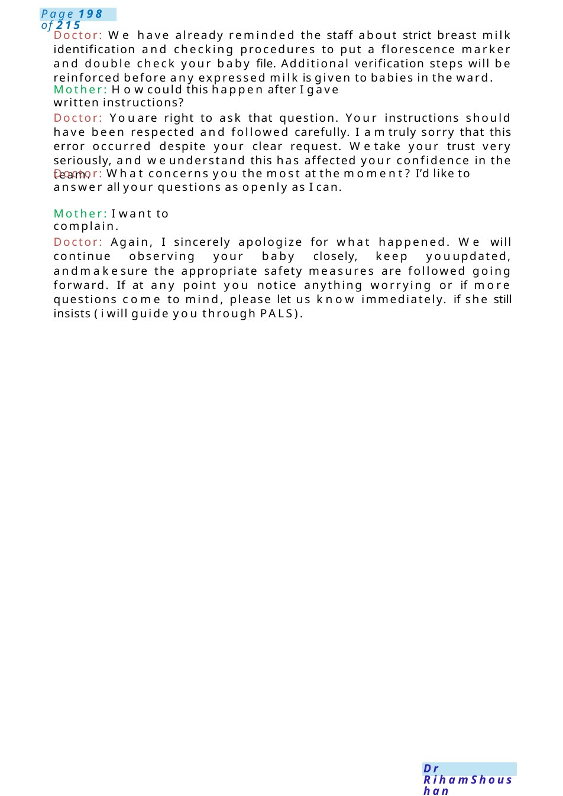
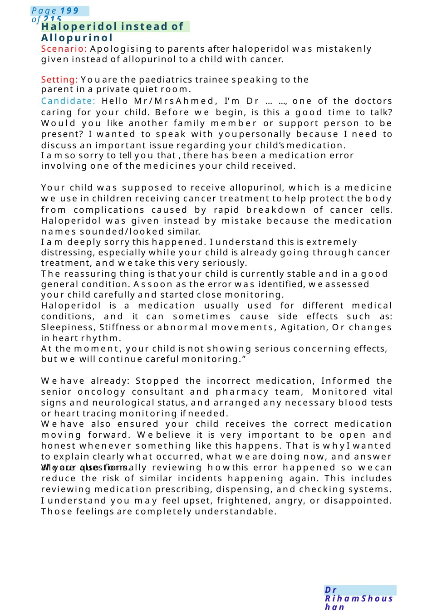

Wrong Breast milk
MRCPCHCommunication Scenario Apology to Mother After Baby Was Given Another Mother’s Breast Milk Setting: Neonatal/postnatal ward
Scenario Summary
MRCPCHCommunication Scenario Apology to Mother After Baby Was Given Another Mother’s Breast Milk Setting: Neonatal/postnatal ward
Full Original Scenario

Wrong Breast milk
MRCPCHCommunication Scenario Apology to Mother After Baby Was Given Another Mother’s Breast Milk
Setting: Neonatal/postnatal ward
Candidate task: Speak to the mother, apologize, explain what happened, address her concerns about allergy/eczema risk, explain immediate actions and future prevention.
Doctor: Hello Mrs Ola, I’m Dr. Sarah, one of the pediatric doctors looking after your baby today. Before westart, is this a good time to talk? Would you like anyone with you for support?
Doctor: I wantedto speak with youpersonally because unfortunately a mistake happened earlier today regarding your baby’s feeding. First of all, I amvery sorry this happened, and I understand this may be upsetting and worrying for you, especially because you had clearly informed us before delivery that you only wanted your baby to receive your ownbreast milk.
Doctor: One of the nurses accidentally gave your baby a small amount of expressed breast milk belonging to another mother instead of your milk. Assoon as the mistake wasidentified, the feed was stopped immediately and the team informed me so we could review your baby and speak with you openly about what happened.
Mother: I specifically told the staff not to give any other milk because myother children had eczema and milk allergies.
Doctor: I completely understand whyyou are upset andconcerned about it. Youhad madeyour wishes very clear, and weshould have followed them carefully. I can see this is particularly worrying for you because of your family history of allergy and eczema.
Doctor: The milk your baby received was human breast milk, not formula or cow milk. Because of that, it is much less likely to trigger the type of milk allergy that you experienced with your other children.
At the momentyour baby is well, and wehave not seen any signs of an allergic reaction such as rash, swelling, vomiting, breathing difficulty, or feeding problems. However, wewill continue to monitor your baby closely and wewill keep you informed of anything concerning.
Doctor: Whenever this type of incident happens, wefollow strict hospital safety procedures.
We are contacting the donor mother and reviewing her infection screening records, which routinely include tests during pregnancy for infections such as hepatitis B, hepatitis C, HIV, and others.
The risk of infection transmission from a single accidental breast milk exposure is considered very low, but westill take it extremely seriously and follow all recommended safety steps.
Doctor: We are documenting this incident formally andreporting it through the hospital safety system. Our Practice Manager and Quality team has already been informed .so that it can be fully reviewed. The purpose is not to blame individuals, but to understand how this happened and prevent it from happening again.

Doctor: We have already reminded the staff about strict breast milk identification and checking procedures to put a florescence marker and double check your baby file. Additional verification steps will be reinforced before any expressed milk is given to babies in the ward.
Mother: Howcould this happen after I gave written instructions?
Doctor: Youare right to ask that question. Your instructions should have been respected and followed carefully. I amtruly sorry that this error occurred despite your clear request. Wetake your trust very seriously, and weunderstand this has affected your confidence in the team.
Doctor: What concerns you the most at the moment? I’d like to answer all your questions as openly as I can.
Mother: I want to complain.
Doctor: Again, I sincerely apologize for what happened. We will continue observing your baby closely, keep youupdated, andmakesure the appropriate safety measures are followed going forward. If at any point you notice anything worrying or if more questions come to mind, please let us know immediately. if she still insists ( i will guide you through PALS).

Haloperidol instead of Allopurinol
Scenario: Apologising to parents after haloperidol was mistakenly given instead of allopurinol to a child with cancer.
Setting: Youare the paediatrics trainee speaking to the parent in a private quiet room.
Candidate: Hello Mr/Mrs Ahmed, I’m Dr ......, one of the doctors caring for your child. Before we begin, is this a good time to talk? Would you like another family member or support person to be present? I wanted to speak with youpersonally because I need to discuss an important issue regarding your child’s medication.
I amso sorry to tell you that , there has been a medication error involving one of the medicines your child received.
Your child was supposed to receive allopurinol, which is a medicine we use in children receiving cancer treatment to help protect the body from complications caused by rapid breakdown of cancer cells. Haloperidol was given instead by mistake because the medication names sounded/looked similar.
I am deeply sorry this happened. I understand this is extremely distressing, especially while your child is already going through cancer treatment, and wetake this very seriously.
The reassuring thing is that your child is currently stable and in a good general condition. Assoon as the error was identified, weassessed your child carefully and started close monitoring.
Haloperidol is a medication usually used for different medical conditions, and it can sometimes cause side effects such as: Sleepiness, Stiffness or abnormal movements, Agitation, Or changes in heart rhythm.
At the moment, your child is not showing serious concerning effects, but we will continue careful monitoring.”
Wehave already: Stopped the incorrect medication, Informed the senior oncology consultant and pharmacy team, Monitored vital signs and neurological status, and arranged any necessary blood tests or heart tracing monitoring if needed.
Wehave also ensured your child receives the correct medication moving forward. Webelieve it is very important to be open and honest whenever something like this happens. That is whyI wanted to explain clearly what occurred, what we are doing now, and answer all your questions.
We are also formally reviewing howthis error happened so wecan reduce the risk of similar incidents happening again. This includes reviewing medication prescribing, dispensing, and checking systems. I understand you may feel upset, frightened, angry, or disappointed. Those feelings are completely understandable.